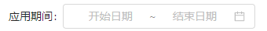

银行流水字段
解析逻辑配置
*交易日期
交易时间
*法人主体
*银行账号
...
账户名称
*币别
......
*借方金额
*贷方金额
余额
对方账号
对方户名
对方行名
摘要
交易流水号
附言
类型
部门
备注
编辑

所属银行：
暂存
提交
1.需求说明：
1.1在【解析逻辑配置】页面，点击【新增】【复制并新增】【修改】按钮可打开当前修改详情页面；
2.按钮控制说明：
2.1【暂存】：点击按钮，校验列表必录字段（*）是否均已配置解析逻辑并维护应用期间，2.1.1校验通过，则暂存成功，并在【解析逻辑配置】页面列表对应生成一条数据；（详见【解析逻辑配置】需求）
2.1.2校验不通过，则暂存失败，并在当前页面红字提示；——详见原型
2.2【提交】：点击按钮，校验列表必录字段（*）是否均已配置解析逻辑并维护应用期间，逻辑同上；2.2.1校验通过，提交成功，并在【解析逻辑配置】页面列表对应生成一条数据；
2.2.2校验不通过，提交失败，并在当前页面红字提示；——详见原型
2.3【解析逻辑配置.编辑】：编辑框提示：①未设置时：查看/编辑；②已设置后：已设置；——详见原型
点击编辑框，弹出【解析逻辑配置】弹窗：列表默认展示一条数据行，字段名包括【序号】【取值条件】【算法】；
2.3.1按钮部分：1）【新增行】【删除】：点击按钮新增/删除数据行；（每条数据行均展示【删除】按钮）
2）【确定】【取消】：点击按钮保存/取消保存或修改上述所维护的【取值条件】和【算法】。
（必录字段点击确定时校验【算法】列均已维护，此时解析逻辑配置.编辑框提示变更为：已设置；否则提示：第x列算法未维护！）
2.3.2字段部分：1）【取值条件】：提示：①未设置时：查看/编辑；②已设置后：展示已设置内容；如：摘要类似于海外仓；
点击编辑框，打开【条件设置】弹窗：
①按钮部分：1）【新增行】【删除】：点击按钮新增/删除数据行；（每条数据行均展示【删除】按钮）
2）【确定】【取消】：点击按钮保存/取消保存或修改上述所维护的【条件设置】。
②字段部分：a.【(】与【)】，各三个值(、((、((( 和 )、))、)))，无默认值；
b.【原始流水字段】：下拉单选，无默认值，选项包含【Aukey财务后台】系统页面对应银行流水字段；必填项
c.【比较】：共10个值，详见原型，无默认值，若为“为空”或“不为空”时，【值】字段被清空且锁定，置灰无法录入；必填项
d.【值】：文本框，手工录入，无默认值，限制50个字符；（当录入值为【原始流水字段】下拉选项时，取【Aukey财务后台】系统页面对应银行流水字段）
e.【逻辑】：下拉单选，无默认值，选项包括“且”“或”，无默认值；
f. 【公式展示】：点击后，将所设置的公式展示在文本框中，文本框不可编辑（默认为空）；
2）【算法】：提示：①未设置时：查看/编辑；②已设置后：展示已设置内容；如：['物流费']；
点击按钮，弹出【算法设置】弹窗：文本框配置公式，必录，无默认值，新增修改时可编辑，查看时不可编辑。
算法公式组合：①选用原始流水上的字段请加英文中括号；——举例：[对方账户名称]，即取值【Aukey财务后台】银行流水【对方账户名称】的字段值；
②手工录入的字符请加英文中括号及单引号；——举例：['物流费']，即取值为“物流费”；
③录入绝对值请加 | | ；——举例：a.录入 |['-1']| ，即取值1 ；b.录入 [|交易金额|]，即取【Aukey财务后台】银行流水【交易金额】字段内容的绝对值；
（如取值非数字，则绝对值无影响）
2.3.3特殊处理：列表【银行流水字段】第一行【交易日期】所对应的解析逻辑配置，2.3.3.1编辑框删除【新增行】【删除】按钮，同时列表【取值条件】文本框置灰；——详见原型；
2.3.3.2点击【算法】，【算法设置】弹窗 算法公式组合仅支持选用各银行流水上的字段，下方提示如原型所示；
3.具体解析逻辑：
【银行流水】页面2.2.2.2具体解析逻辑如下：
3.1拉取【Aukey财务后台】系统对应数据，依次匹配该页面已配置的解析逻辑；
3.1.1若【解析逻辑配置】弹窗列表仅存在一条数据行，则该字段按照【取值条件】取【算法】中的匹配公式值；
3.1.2若【解析逻辑配置】弹窗列表存在多条数据行，则该字段按照满足【取值条件】的对应数据行分别取【算法】中的匹配公式值； ——取值条件为空则无特定取值范围；
3.2若非必录字段未配置解析逻辑，则对应字段解析为空值 ；
3.3特殊处理：
3.3.1【交易日期】解析逻辑配置（必录）；
3.3.1.1当【算法】所取字段值格式为yyyy-mm-dd时，正常赋值；
3.3.1.2当【算法】所取字段值格式为yyyy-mm-dd hh:mm:ss时，取前半部分精确到天的日期赋值（空格前的字段值）；
3.3.1.3当【算法】所取字段值格式为yyyy-mm-dd-hh:mm时，取前半部分精确到天的日期赋值（左起第三个“-”前面的字段值）；
3.3.1.4当【算法】所取字段值非3.3.1.1~3.3.1.3上述三种情况时，该流水解析失败，并给出邮件提示；（详见【银行流水】页面2.2.4.2））
3.3.2【交易时间】解析逻辑配置（非必录）；
3.3.2.1当【算法】所取字段值格式为hh:mm:ss时，正常赋值；
3.3.2.2当【算法】所取字段值格式为yyyy-mm-dd hh:mm:ss时，取后半部分 时分秒 赋值（空格后的字段值）；
3.3.2.3当【算法】所取字段值格式为yyyy-mm-dd-hh:mm时，取后半部分 时分 赋值（左起第三个“-”后面的字段值）；
3.3.2.4当【算法】所取字段值非3.3.2.1~3.3.2.4上述三种情况时，该字段解析为空值；（详见【银行流水】页面2.2.4.4））
3.3.3【币别】解析逻辑配置（必录）；
3.3.3.1当【算法】所取字段值为中文时，将所取值匹配【财务对接平台/EAS基础资料/币别】中的【名称】字段，并取对应【编码】赋值至银行流水页面；否则未匹配成功则该流水解析失败；
3.3.3.2当【算法】所取字段值为英文时，将所取值匹配【财务对接平台/EAS基础资料/币别】中的【编码】字段，直接赋值至银行流水页面；否则未匹配成功则该流水解析失败；
（注：若所取字段值为 CNY，需按RMB匹配【编码】字段）
3.4.3.3当【算法】所取字段值非3.3.1和3.3.2上述两种情况时，该流水解析失败，并给出邮件提示；（详见【银行流水】页面2.2.4.4））
4.字段属性：
4.1搜索栏：4.1.1【应用期间】：无默认值，精确到月份；
4.1.2【所属银行】：置灰，展示已维护的所属银行；
4.2列表：4.2.1【银行流水字段】：赋固定值；——详见原型；
4.2.2【解析逻辑配置】：参考2.3
编辑
编辑